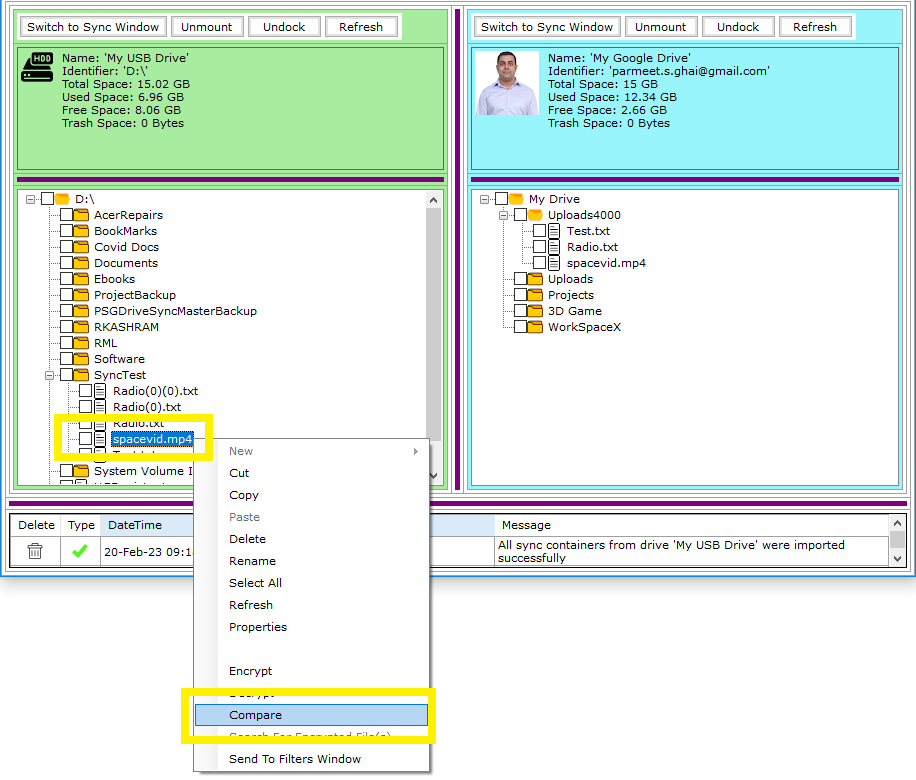
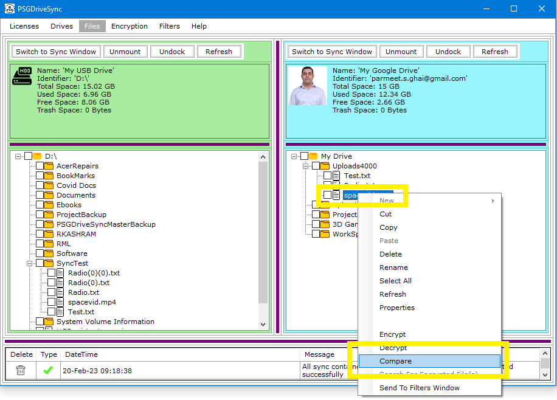
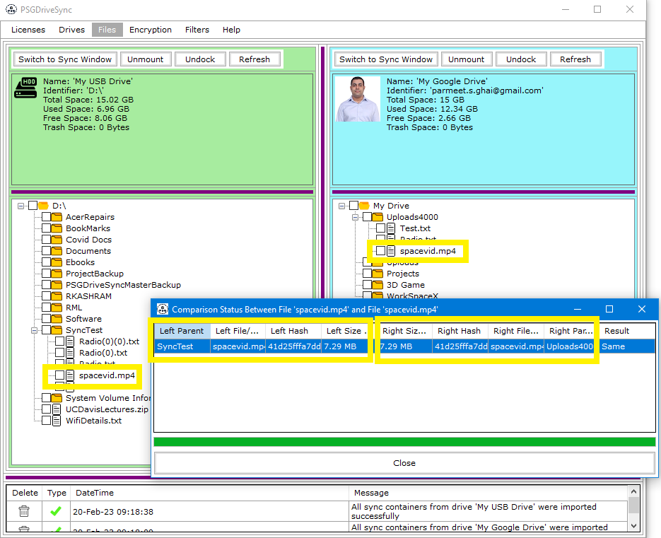

The Compare tool has been designed to easily and accurately compare two files using file names, file size with precision upto a single byte
and SHA256 hash of the file content. if all 3 values are the same then files are considered to be same and its indicated with a status of "Same".
This functionality works on both standalone files and files contained in a folder which basically allows either two files to be compared or two folders
to be compared regardless of the drive that they are in. Two folders are considered same if all files in one folder, including its subfolders, are the same
as all the files contained in another folder.
Following are the steps needed to be performed in order to compare two files and folders
|
1 |
Right click on any file or folder of your choosing and then click on "Compare" in the right click menu. Doing so will make this file or folder the first file or folder to be used in the comparison operation. |
 |
|
2 |
Right click on any other file or folder of your choosing and then click on "Compare" in the right click menu. Doing so will make this file or folder the second file or folder to be used in the comparison operation. A progress window should pop open displaying the comparison status between the two files. |
 |
|
3 |
Once the comparison process completes then the result of the comparison should show at the very end of the comparison row. It would either say "Same" indicating that the file(s) or folder(s) are the same or "Not Same" indicating that the file(s) or folder(s) are not same. After that you may close the window by clicking on "Close". |
 |